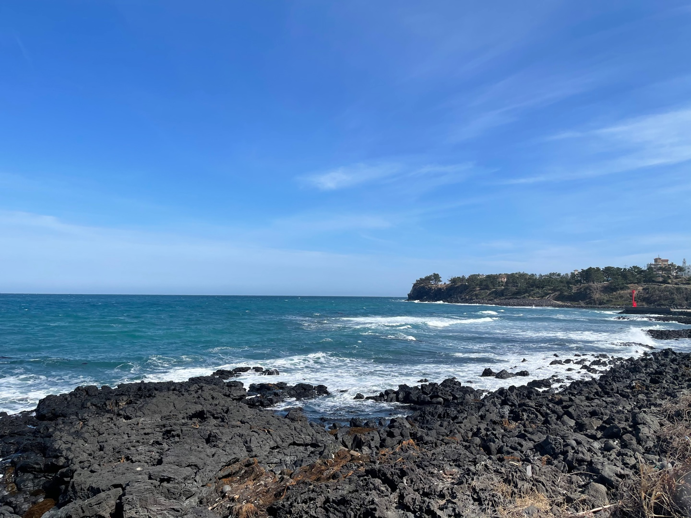
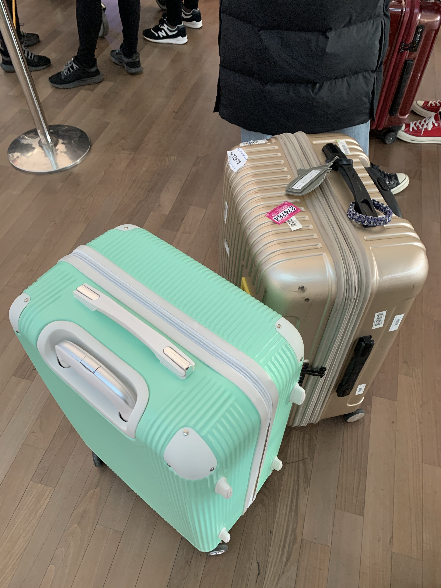

취미목록
1. 유튜브 보기
저는 자기 전에 항상 유튜브를 보고 잡니다.
최근에는 가수들의 라이브 영상을 자주 봅니다.
성시경의 세사람 라이브 영상 링크
2. 사진 찍기
올해 2월에 제주도에 갔을 때 찍은 바다 사진입니다.
역시 제주도 바다는 너무 이쁜 것 같지 않나요?
3. 여행 가기
작년에 코로나 터지기 바로 직전에 베트남 다낭에 다녀왔습니다.
다낭 가기 전에 인천공항에서 찍은 사진인데 사진만 봐도 설레지 않나요?
요새는 코로나때문에 해외에 가지 못해 너무 아쉽습니다.
더 많은 사진을 보고싶으면 제 인스타에 놀러오세요